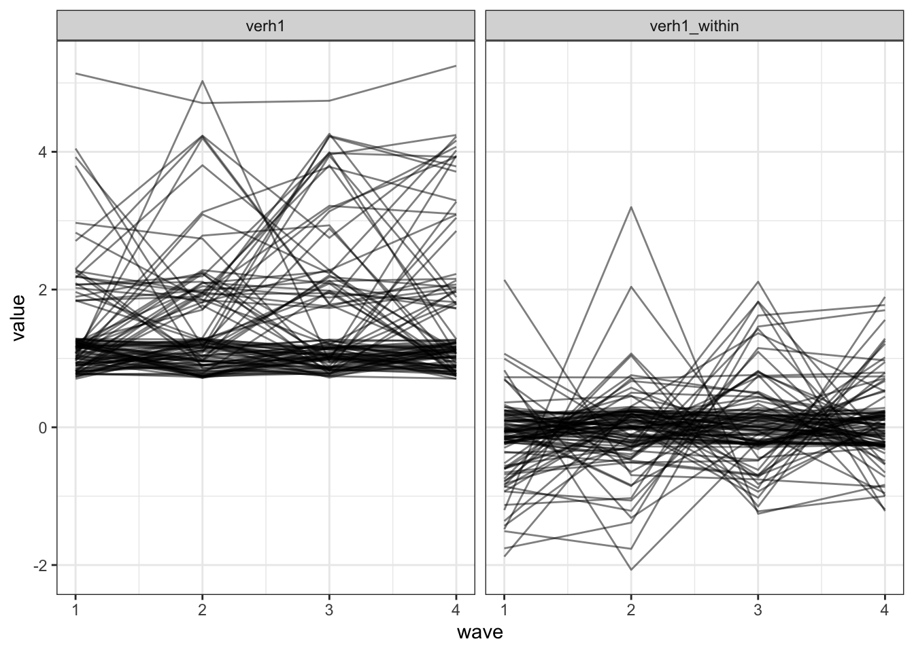

Abschnitt 3 Fixed effects Modelle
3.1 Konzeptionelle Einführung
- Im ersten Teil des Abschnitts zu fixed effects Modellen beschäftigen wir uns mit den Grundlagen der Modellierung. Dazu nutzen wir
stats::lm()(übliche OLS-Schätzung linearer Modelle inR).
Wie können wir den kausalen (within-person) Effekt mit Paneldaten schätzen?
- Separate OLS Modelle für jede Person schätzen und Koeffizienten mitteln (no pooling).
- Alle \(X\) und \(Y\) Variablen um die Mittelwerte der Person zentrieren (within transformation).
- Dummy-Variablen für jede Person in das Regressionsmodell aufnehmen (least squares dummy variables [LSDV] estimation).
- Alle drei Varianten entfernen die (beobachteten und nicht beobachten,) über die Zeit konstanten Unterschiede zwischen den Personen.
- Varianten 2 und 3 entsprechen dem klassischen fixed effects Modell. Die Unterschiede zwischen den Personen werden kontrolliert, indem die personenspezifischen Mittelwerte vor der Schätzung entfernt werden (2) oder für jede Person im Modell geschätzt werden (3).
- \(y_{it}-\bar{y_{i}} = (x_{it} - \bar{x_{i}})'\beta + (u_{it} - \bar{u_{i}})\) oder \(y_{it} = \beta' x_{it}' + \alpha_i + u_{it}\)
- In Variante 1 dürfen die kausalen within-person Effekte zwischen den Personen variieren. Unter der Annahme homogener Treatment-Effekte (entspricht der typischen Annahme im randomisierten Between-Subject-Experiment) entspricht das Ergebnis asymptotisch den Varianten 2 und 3.
- Der Schätzer ist aber weniger effizient, da zufällige Unterschiede in den Effekten zwischen den Personen aufgegriffen werden.
- Im letzten Teil des Abschnitts zum within-between-Modell kommen wir auf diesen Punkt zurück, wenn wir die Annahme homogener Treatment-Effekte lockern.
No pooling
d %>% group_by(IDsosci) %>% nest() %>% mutate(mdls = map(data, ~tidy(lm(verh1 ~ verhint1,
data = .x)))) %>% unnest(mdls) %>% ungroup() %>% select(-data) %>% na.omit() %>%
filter(statistic != Inf) %>% filter(term == "verhint1") %>% mutate_if(is.numeric,
round, 2) %>% print %>% summarise(estimate = mean(estimate), std.error = sqrt(mean(std.error^2))) # simple approximation## # A tibble: 232 x 6
## IDsosci term estimate std.error statistic p.value
## <chr> <chr> <dbl> <dbl> <dbl> <dbl>
## 1 050IPY verhint1 1.25 0.56 2.24e+ 0 0.15
## 2 05J4R8 verhint1 0.45 0.18 2.50e+ 0 0.13
## 3 08BDZJ verhint1 0.33 0.53 6.30e- 1 0.59
## 4 0EO9L2 verhint1 1.67 0.67 2.50e+ 0 0.13
## 5 0F5L9Z verhint1 0 0.71 0. 1
## 6 0KYYAJ verhint1 0.45 0.18 2.50e+ 0 0.13
## 7 0ONV4O verhint1 1 0 9.01e+15 0
## 8 0ZCKB5 verhint1 -0.35 0.5 -6.90e- 1 0.56
## 9 114OWA verhint1 0.33 0.33 1.00e+ 0 0.42
## 10 16YGN0 verhint1 0.5 0.25 2.00e+ 0 0.18
## # … with 222 more rows## # A tibble: 1 x 2
## estimate std.error
## <dbl> <dbl>
## 1 0.502 0.521- Wir erhalten für jede Person einen Schätzer mit Standardfehler. Wir können diese mitteln, um einen Schätzer des durchschnittlichen kausalen Effekts zu erhalten.
- Wir müssen die Schätzer entfernen, bei denen es wegen eines perfekten Zusammenhangs oder wegen fehlender intraindividueller Varianz keine OLS Lösung gibt.
Within Transformation
- Wir ziehen von jedem Messwert den Personenmittelwert ab. In das Modell gehen dann die um den Personenmittelwert bereinigten Variablen ein.
d_wi = d %>% select(IDsosci, verh1, verhint1) %>% group_by(IDsosci) %>% mutate(verh1_wi = verh1 -
mean(verh1), verhint1_wi = verhint1 - mean(verhint1)) %>% ungroup()
d_wi %>% select(-IDsosci) %>% summary## verh1 verhint1 verh1_wi verhint1_wi
## Min. :1.0 Min. :1.0 Min. :-3.00 Min. :-3.00
## 1st Qu.:1.0 1st Qu.:1.0 1st Qu.:-0.25 1st Qu.:-0.25
## Median :1.0 Median :1.0 Median : 0.00 Median : 0.00
## Mean :1.5 Mean :1.8 Mean : 0.00 Mean : 0.00
## 3rd Qu.:2.0 3rd Qu.:2.0 3rd Qu.: 0.00 3rd Qu.: 0.00
## Max. :5.0 Max. :5.0 Max. : 3.00 Max. : 3.00## # A tibble: 2 x 5
## term estimate std.error statistic p.value
## <chr> <dbl> <dbl> <dbl> <dbl>
## 1 (Intercept) 0 0.01 0 1
## 2 verhint1_wi 0.35 0.01 24.9 0- Intuitive Interpretation: Eine Abweichung vom Personen-Durchschnitt in \(X\) um einen Punkt führt zu einer Abweichung vom Personen-Durchschnitt in \(Y\) um \(b_{X}\) Punkte.
- Hier: Wenn eine Person um einen Punkt wahrscheinlicher raus gehen möchte als üblich, dann wird sie 0.34 Punkte häufiger raus gehen (beides auf 5er Skalen).
- Das ist durchaus ein bedeutsamer Effekt. Aber zur Erinnerung: Der naiven pooled OLS Schätzung zufolge war der Effekt fast doppelt so groß. Es scheint also auch einen Unterschied zwischen Personen zugeben. Personen, die im Durchschnitt wahrscheinlicher raus gehen wollen, gehen im Durchschnitt auf häufiger raus.
Least Squares mit Dummy Variablen (LSDV)
- Es wird ein Dummy-Indikator für jede \(n-1\)te Person in das Modell aufgenommen.
d %>% lm(verh1 ~ verhint1 + factor(IDsosci), data = .) %>% tidy() %>% mutate_if(is.numeric,
round, 2) %>% print(n = 17)## # A tibble: 577 x 5
## term estimate std.error statistic p.value
## <chr> <dbl> <dbl> <dbl> <dbl>
## 1 (Intercept) 0.65 0.28 2.31 0.02
## 2 verhint1 0.35 0.02 21.5 0
## 3 factor(IDsosci)02E6C8 -0.35 0.4 -0.86 0.39
## 4 factor(IDsosci)050IPY 1.21 0.4 3.01 0
## 5 factor(IDsosci)05J4R8 0.32 0.4 0.79 0.43
## 6 factor(IDsosci)08BDZJ 0.96 0.4 2.39 0.02
## 7 factor(IDsosci)0BHGLF 0.570 0.4 1.42 0.16
## 8 factor(IDsosci)0EB6C1 0 0.4 0 1
## 9 factor(IDsosci)0EO9L2 1.95 0.4 4.82 0
## 10 factor(IDsosci)0F5L9Z 1.64 0.4 4.06 0
## 11 factor(IDsosci)0KAKHF 2.2 0.4 5.44 0
## 12 factor(IDsosci)0KYYAJ -0.01 0.4 -0.02 0.98
## 13 factor(IDsosci)0ONV4O 0.33 0.4 0.82 0.41
## 14 factor(IDsosci)0PKFWT -0.09 0.4 -0.22 0.83
## 15 factor(IDsosci)0ZCKB5 0.32 0.4 0.79 0.43
## 16 factor(IDsosci)114OWA 0.33 0.4 0.82 0.41
## 17 factor(IDsosci)11KVRK -0.17 0.4 -0.43 0.67
## # … with 560 more rows- Der Punktschätzer \(b_{X}\) entspricht genau dem Punktschätzer nach der within-person Transformation.
- Zusätzlich gibt die Regressionskonstante den Mittelwert für Person 1 an und die \(n - 1\) Koeffizienten der Dummy-Variablen die Abweichung der übrigen Personen von diesem Mittelwert. Es gelten die üblichen Regeln für die Interpretation solcher Koeffizienten.
Welche Modellspezifikation soll ich nutzen?
Der Schätzer des durchschnittlichen kausalen Effekts in der no pooling Spezifikation ist im Vergleich zu den beiden anderen Varianten weniger effizient. Außerdem ist er praktisch schwieriger zu ermitteln, da er erst aus den Schätzern der Einzel-Modelle berechnet werden muss. Wenn wir die Annahme eines homogenen kausalen Effekts treffen (und das tun wir üblicherweise), dann gibt es keinen Grund, das no pooling Modell in der Praxis zu verwenden.
Die Spezifikationen mit within-person Transformation und LSDV ergeben dieselben Punktschätzer für den kausalen Effekt und sind insofern austauschbar.
Die Standardfehler des Modells mit einer naiven within-person Transformation (wie oben dargestellt) sind zu klein, da wir die Stichprobenmittelwerte und nicht die (mit Unsicherheit behafteten) Schätzer der Populationsmittelwerte zur Zentrierung verwenden. Die Standardfehler müssen daher angepasst werden (passiert in spezialisierten Software-Paketen automatisch).
Die LSDV Spezifikation ist in fast jedem Softwarepaket einfach umzusetzen. Mit großen Datensätzen wird aber die Schätzung langsam und der Output unübersichtlich.
Unabhängig von der Spezifikation gelten weiterhin alle Annahmen der (OLS) Regression. Besonders gern vergessen wird der omitted variable bias durch nicht gemessene, über die Zeit variierende \(Z\). Fixed effects Modelle kontrollieren nur die \(Z\), die auf konstante Merkmale der als fixed effects spezifizierten Einheiten zurückgehen.
Insgesamt sind viele quantitative Sozialforscher*innen (v.a. die mit einer Ökonometrie-Ausbildung) der Ansicht, dass fixed effects Modelle die beste Methode sind, um kausale Effekte aus nicht-experimentellen Daten zu schätzen.
Mehre fixed effects in einem Modell – Perioden-Effekte
- Grundsätzlich können in einem Modell beliebig viele fixed effects spezifiziert werden.
- In Paneldaten ist der Erhebungszeitpunkt bzw. die Erhebungsperiode (Panelwelle) eine typische Variable, über die verschiedene, für alle Personen konstante Effekte kontrolliert werden können.
- Einige Lehrbücher empfehlen, dies immer zu tun, da kausale Effekte von Ereignissen, die für alle Einheiten konstant sind, statistisch nicht identifiziert sind.
- Eine typische Spezifikation ist die Aufnahme eines fixed effects für den Indikator der Panelwelle.
- In der LSDV-Spezifikation kann einfach ein weiterer Dummy-Faktor hinzugefügt werden. Die within-person Transformation ist mathematisch komplizierter, wird aber in spezialisierten Software-Pakten im Hintergrund erledigt. Es können auch beide Spezifikationen kombiniert werden, wenn z.B. die Periodeneffekte von inhaltlichem Interesse sind und im Output angezeigt werden sollen (siehe nächsten Teilabschnitt).
Ein Beispiel mit fixed effects für Personen und Perioden
d %>% lm(verh1 ~ verhint1 + factor(wave) + factor(IDsosci), data = .) %>% tidy() %>%
mutate_if(is.numeric, round, 2) %>% print(n = 17)## # A tibble: 580 x 5
## term estimate std.error statistic p.value
## <chr> <dbl> <dbl> <dbl> <dbl>
## 1 (Intercept) 0.6 0.28 2.13 0.03
## 2 verhint1 0.33 0.02 19.8 0
## 3 factor(wave)2 0.02 0.03 0.6 0.55
## 4 factor(wave)3 0.14 0.03 4.15 0
## 5 factor(wave)4 0.12 0.03 3.41 0
## 6 factor(IDsosci)02E6C8 -0.33 0.4 -0.83 0.41
## 7 factor(IDsosci)050IPY 1.26 0.4 3.15 0
## 8 factor(IDsosci)05J4R8 0.34 0.4 0.85 0.39
## 9 factor(IDsosci)08BDZJ 1.01 0.4 2.53 0.01
## 10 factor(IDsosci)0BHGLF 0.59 0.4 1.48 0.14
## 11 factor(IDsosci)0EB6C1 0 0.4 0 1
## 12 factor(IDsosci)0EO9L2 2.02 0.4 5.01 0
## 13 factor(IDsosci)0F5L9Z 1.68 0.4 4.2 0
## 14 factor(IDsosci)0KAKHF 2.27 0.4 5.63 0
## 15 factor(IDsosci)0KYYAJ 0 0.4 0.01 0.99
## 16 factor(IDsosci)0ONV4O 0.34 0.4 0.84 0.4
## 17 factor(IDsosci)0PKFWT -0.08 0.4 -0.21 0.84
## # … with 563 more rows- \(b_{verhint1}\) quantifiziert weiterhin den kausalen Effekt von Interesse. Er ist robust gegen die Kontrolle des Periodeneffekts.
- Die \(b_{wave_t}\) zeigen den Kontrast zur ersten Welle. In diesem Fall sind liegen in der dritten und vierten Welle die Häufigkeiten des Rausgehens höher als noch in den ersten beiden Wellen.
- Die \(b_{id_i}\) zeigen weiterhin den Kontrast zu Person 1 (substantiell nicht sonderlich interessant).
3.2 Übungsaufgaben 1
- Schätze den kausalen Effekt der Einstellung zum Verhalten, weniger als 1.5m Abstand zu Personen zu halten, die nicht im gleichen Haushalt leben
ein3, auf die diesbezügliche Verhaltensintention (verhint3).- Schätze zuerst das falsche pooled OLS Modell.
- Schätze dann das einfache fixed effects Modell mit einer Spezifikation deiner Wahl.
- Vergleiche schließlich die Modelle mit und ohne Periodeneffekt.
- Spezifiziere, schätze und interpretiere ein eigenes bivariates fixed effects Modell mit Daten aus dem Beispieldatensatz.
3.3 Fixed effects Modelle in der praktischen Anwendung
- Auch wenn wir das fixed effects Modell nur mit
stats::lm()und der LSDV-Spezifikation schätzen können, ist die weitere Arbeit mit diesen Modellen nicht ideal - besonders, wenn wir tiefer in Detail-Anpassungen einsteigen. - Zudem wird das Schätzen mit
stats::lm()und LSDV bei großen Datensätzen und mit vielen fixed effects langsam. plm(Croissant, Millo, and Tappe 2020) ist das etablierte Paket für das Schätzen von ökonometrischen Panel-Modellen inR. Es bietet ein einfaches Interface zu allen Standardmodellen (und zu den übrigen Klassikern der Ökonometrie, instrumental variables, differences in differences).- Das Schätzen der Modelle basiert auf OLS mit Datentransformationen im Hintergrund. Dadurch ist das Schätzen wesentlich schneller als mit einer LSDV-Spezifikation. Die notwendigen Anpassungen der Standardfehler werden ebenfalls vorgenommen.
Spezifikation eines einfachen fixed effects Modells mit plm
- Das fixed effects Modell wird über
model = "within"angefordert. Mitindex = "IDsosci"wird der Indikator für die Einheiten angegeben.
## Oneway (individual) effect Within Model
##
## Call:
## plm(formula = verh1 ~ verhint1, data = ., model = "within", index = "IDsosci")
##
## Balanced Panel: n = 576, T = 4, N = 2304
##
## Residuals:
## Min. 1st Qu. Median 3rd Qu. Max.
## -3.0000 -0.1635 0.0000 0.0959 3.0000
##
## Coefficients:
## Estimate Std. Error t-value Pr(>|t|)
## verhint1 0.3459 0.0161 21.5 <2e-16 ***
## ---
## Signif. codes: 0 '***' 0.001 '**' 0.01 '*' 0.05 '.' 0.1 ' ' 1
##
## Total Sum of Squares: 702
## Residual Sum of Squares: 554
## R-Squared: 0.212
## Adj. R-Squared: -0.0512
## F-statistic: 463.924 on 1 and 1727 DF, p-value: <2e-16- Der Output von
summary()liefert eine korrekte Beschreibung der Fallzahlen im Datensatz. - Beachte: Das angepasste \(R^2\) ist hier (wie in vielen fixed effects Modellen) negativ. Das ist kein Grund zur Beunruhigung. Die Logik dahinter kann gut nachvollzogen werden, wenn wir uns die LSDV-Spezifikation in Erinnerung rufen. Zusätzlich zu den inhaltlich relevanten Prädiktoren enthält das Modell \(n - 1\) Prädiktoren für die Einheiten.
Mehre fixed effects in einem Modell – Perioden-Effekte mit plm
plmbietet zwei Möglichkeiten, die Perioden-Effekte zu spezifizieren (identische Ergebnisse, anderer Output):
- Zwei Indices
index=c("IDsosci", "wave")undeffect = "twoways"für die within-Transformation.- Es wird “still” für Personen und Perioden kontrolliert, beide werden nicht im Output angezeigt.
- Das \(R^2\) bezieht sich nur auf die Varianzaufklärung durch die Prädiktoren.
- Perioden-Effekt als Dummies hinzufügen.
- Praktisch, wenn es nur wenige Perioden gibt und wir die Ergebnisse dazu direkt im Output sehen wollen.
- Das \(R^2\) bezieht sich auf die Varianzaufklärung durch die Prädiktoren und den Perioden-Effekt.
d %>% plm(verh1 ~ verhint1, data = ., index = c("IDsosci", "wave"), model = "within",
effect = "twoways") %>% summary()## Twoways effects Within Model
##
## Call:
## plm(formula = verh1 ~ verhint1, data = ., effect = "twoways",
## model = "within", index = c("IDsosci", "wave"))
##
## Balanced Panel: n = 576, T = 4, N = 2304
##
## Residuals:
## Min. 1st Qu. Median 3rd Qu. Max.
## -3.0705 -0.1806 0.0117 0.1316 3.0494
##
## Coefficients:
## Estimate Std. Error t-value Pr(>|t|)
## verhint1 0.3288 0.0166 19.8 <2e-16 ***
## ---
## Signif. codes: 0 '***' 0.001 '**' 0.01 '*' 0.05 '.' 0.1 ' ' 1
##
## Total Sum of Squares: 670
## Residual Sum of Squares: 546
## R-Squared: 0.185
## Adj. R-Squared: -0.0886
## F-statistic: 391.609 on 1 and 1724 DF, p-value: <2e-16mdl_pfe_pdv = d %>% plm(verh1 ~ verhint1 + factor(wave), data = ., index = "IDsosci",
model = "within")
mdl_pfe_pdv %>% summary()## Oneway (individual) effect Within Model
##
## Call:
## plm(formula = verh1 ~ verhint1 + factor(wave), data = ., model = "within",
## index = "IDsosci")
##
## Balanced Panel: n = 576, T = 4, N = 2304
##
## Residuals:
## Min. 1st Qu. Median 3rd Qu. Max.
## -3.0705 -0.1806 0.0117 0.1316 3.0494
##
## Coefficients:
## Estimate Std. Error t-value Pr(>|t|)
## verhint1 0.3288 0.0166 19.79 < 2e-16 ***
## factor(wave)2 0.0200 0.0336 0.60 0.55169
## factor(wave)3 0.1400 0.0337 4.15 0.000034 ***
## factor(wave)4 0.1178 0.0345 3.41 0.00065 ***
## ---
## Signif. codes: 0 '***' 0.001 '**' 0.01 '*' 0.05 '.' 0.1 ' ' 1
##
## Total Sum of Squares: 702
## Residual Sum of Squares: 546
## R-Squared: 0.223
## Adj. R-Squared: -0.0377
## F-statistic: 123.824 on 4 and 1724 DF, p-value: <2e-16Robuste Standardfehler
In der ökonometrischen Diskussion ist die Wahl der korrekten (robusten) Standardfehler sehr prominent. Diese sind robust gegen Verletzung verschiedener Annahmen, z.B. durch serielle Korrelationen der Residuen oder Heteroskedastizität.
Das
lmtestPaket (Hothorn et al. 2019) ist kompatibel mit Modellen ausplm. Es implementiert zahlreiche robuste Schätzer bzw. Korrekturen.Hier die “normalen” Standardfehler und bei Heteroskedastizität robuste Standardfehler sowie die darauf basierenden Konfidenzintervalle im Vergleich.
Weiter wollen wir dieses Thema hier nicht vertiefen. Ich empfehle für die Details der Umsetzung in
plmMillo (2017) und zu einer kritischen Auseinandersetzung King and Roberts (2015).
##
## t test of coefficients:
##
## Estimate Std. Error t value Pr(>|t|)
## verhint1 0.329 0.017 19.79 <2e-16 ***
## factor(wave)2 0.020 0.034 0.60 0.552
## factor(wave)3 0.140 0.034 4.15 <2e-16 ***
## factor(wave)4 0.118 0.034 3.42 0.001 ***
## ---
## Signif. codes: 0 '***' 0.001 '**' 0.01 '*' 0.05 '.' 0.1 ' ' 1## 2.5 % 97.5 %
## verhint1 0.296 0.361
## factor(wave)2 -0.046 0.086
## factor(wave)3 0.074 0.206
## factor(wave)4 0.050 0.185##
## t test of coefficients:
##
## Estimate Std. Error t value Pr(>|t|)
## verhint1 0.329 0.028 11.87 <2e-16 ***
## factor(wave)2 0.020 0.029 0.69 0.49
## factor(wave)3 0.140 0.036 3.85 <2e-16 ***
## factor(wave)4 0.118 0.032 3.70 <2e-16 ***
## ---
## Signif. codes: 0 '***' 0.001 '**' 0.01 '*' 0.05 '.' 0.1 ' ' 1## 2.5 % 97.5 %
## verhint1 0.274 0.383
## factor(wave)2 -0.037 0.077
## factor(wave)3 0.069 0.211
## factor(wave)4 0.055 0.180Aufnahme weiterer über die Zeit variierender Prädiktoren
Die Aufnahme weiterer Prädiktoren, die über die Zeit variieren, erfolgt prinzipiell wie im bekannten OLS Modell.
Wichtig ist, dass es bei fixed effects Modellen explizit um das Schätzen von kausalen Effekten geht. Entsprechend bedacht sollte die Auswahl von weiteren Prädiktoren sein. Ein “kitchen sink” Ansatz, den man vor allem in OLS mit Querschnittsdaten sieht, ist hier nicht angebracht. Es muss (wie eigentlich immer) darauf geachtet werden, welche Koeffizienten eines Regressionsmodells kausal interpretiert werden dürfen (Keele, Stevenson, and Elwert 2019). Im fixed effects Modell müssen wir uns das ganz explizit vergegenwärtigen und in der Ergebnisdarstellung berücksichtigen, da die Modellklasse kausale Effekte impliziert.
Nach der TPB dürfen wir dieses Modell annehmen, da die drei Prädiktoren auf derselben kausalen Stufe stehen: Verhaltensintention ~ Einstellung + Deskriptive Norm + Injunktive Norm. Hier schätzen wir das Modell für die Verhaltensintention Rausgehen ohne triftigen Grund.
d %>% plm(verhint1 ~ ein1 + desnormp1 + injnormp1 + factor(wave), data = ., index = "IDsosci",
model = "within") %>% tidy() %>% mutate_if(is.numeric, round, 2)## # A tibble: 6 x 5
## term estimate std.error statistic p.value
## <chr> <dbl> <dbl> <dbl> <dbl>
## 1 ein1 0.31 0.02 12.4 0
## 2 desnormp1 0.05 0.03 1.56 0.12
## 3 injnormp1 0.1 0.03 3.31 0
## 4 factor(wave)2 0.21 0.05 4.69 0
## 5 factor(wave)3 0.24 0.05 5.3 0
## 6 factor(wave)4 0.39 0.05 8.32 0- Vor allem die Einstellung zum Verhalten und die wahrgenommenen normativen Erwartungen haben stärkere kausale Effekte auf die Verhaltensintention.
Aufnahme eines Personenmerkmals (funktioniert nicht, ohne Warnung!)
- In einer typischen Regresssionanalyse würden wir uns z.B. auch dafür interessieren, ob sich das Verhalten nach dem Geschlecht unterscheidet. Wir nehmen also
C_sexin die Formel auf, mit der wir das Modell inplmspezifizieren.
d %>% plm(verh1 ~ verhint1 + C_sex + factor(wave), data = ., index = "IDsosci", model = "within") %>%
summary## Oneway (individual) effect Within Model
##
## Call:
## plm(formula = verh1 ~ verhint1 + C_sex + factor(wave), data = .,
## model = "within", index = "IDsosci")
##
## Balanced Panel: n = 576, T = 4, N = 2304
##
## Residuals:
## Min. 1st Qu. Median 3rd Qu. Max.
## -3.0705 -0.1806 0.0117 0.1316 3.0494
##
## Coefficients:
## Estimate Std. Error t-value Pr(>|t|)
## verhint1 0.3288 0.0166 19.79 < 2e-16 ***
## factor(wave)2 0.0200 0.0336 0.60 0.55169
## factor(wave)3 0.1400 0.0337 4.15 0.000034 ***
## factor(wave)4 0.1178 0.0345 3.41 0.00065 ***
## ---
## Signif. codes: 0 '***' 0.001 '**' 0.01 '*' 0.05 '.' 0.1 ' ' 1
##
## Total Sum of Squares: 702
## Residual Sum of Squares: 546
## R-Squared: 0.223
## Adj. R-Squared: -0.0377
## F-statistic: 123.824 on 4 and 1724 DF, p-value: <2e-16- Geschlecht wird nicht in das Modell aufgenommen. Vorsicht: Es taucht einfach nicht im Ergebnis auf, obwohl es in der Formel steht (siehe
Callin der Summary)
Warum wird das Personenmerkmal nicht ins Modell aufgenomen?
- Within-person Transformation entfernt die gesamte between-person Varianz aus den Daten: \(\bar{y_{i}} = 0\).
- Daher können innerhalb der Personen invariante Merkmale keine Unterschiede erklären.
id_smple = sample(unique(d$IDsosci), 100)
d %>% filter(IDsosci %in% id_smple) %>% select(IDsosci, wave, verh1) %>% group_by(IDsosci) %>%
mutate(verh1_within = verh1 - mean(verh1)) %>% ungroup() %>% gather(transformation,
value, -IDsosci, -wave) %>% ggplot(aes(wave, value, group = IDsosci)) + geom_line(position = position_jitter(width = 0,
height = 0.3), show.legend = FALSE, alpha = 0.5) + facet_wrap("transformation")
Die Abbildung verdeutlicht dies anhand von 100 zufällig ausgewählten Personen aus dem Datensatz. Vor der Transformation gibt es (etwas) Varianz im Level des berichteten Verhaltens zwischen den Personen. Durch die Transformation verschwinden diese Unterschiede, es bleibt nur die Variation innerhalb der Personen über die Zeit.
Das gleiche gilt für Prädiktoren, die als Merkmale anderer Einheiten, die wir als fixed effects spezifiziert haben, konstant sind. In diesem Beispiel wären dies Eigenschaften der Perioden, also z.B. neue Schutzmaßnahmen bzw. deren Lockerung, soweit sie alle Personen gleichermaßen im gleichen Zeitraum betreffen.
Interaktionen mit Personenmerkmalen
- Wir können jedoch Interaktionen zwischen über die Zeit variierenden Prädiktoren und Personenmerkmalen (oder Merkmalen anderer fixed effects Einheiten) ins Modell aufnehmen.
- Bei kategoriellen Moderator-Variablen erhalten wir Schätzer der Unterschiede zwischen gruppenspezifischen Effekten, z.B. den Unterschied zwischen den Effekten der Verhaltensintention auf das Verhalten für Frauen und Männer.
- Bei kontinuierlichen Moderator-Variablen gelten die üblichen Fallstricke: Der Koeffizient des Prädiktors ist nun der einfache Effekt für den Fall, dass der Moderator gleich 0 ist. Der Koeffizient des Interaktionsterms quantifiziert den Unterschied des Effekts zwischen zwei Personen, die sich auf dem Moderator um eine Einheit unterscheiden.
d %>% plm(verh1 ~ verhint1 * C_sex + factor(wave), data = ., index = "IDsosci", model = "within") %>%
tidy() %>% mutate_if(is.numeric, round, 2)## # A tibble: 5 x 5
## term estimate std.error statistic p.value
## <chr> <dbl> <dbl> <dbl> <dbl>
## 1 verhint1 0.34 0.03 13.2 0
## 2 factor(wave)2 0.02 0.03 0.59 0.55
## 3 factor(wave)3 0.14 0.03 4.14 0
## 4 factor(wave)4 0.12 0.03 3.42 0
## 5 verhint1:C_sex -0.01 0.03 -0.39 0.7- Der Effekt ist in der Stichprobe für Frauen minimal schwächer als für Männer. Der Unterschied ist jedoch weder substantiell noch statistisch bedeutsam.
3.4 Zusammenfassung: Vor- und Nachteile des fixed effects Modells
In many applications the whole point of using panel data is to allow for \(a_i\) to be arbitrarily correlated with the \(x_{it}\). A fixed effects analysis achieves this purpose explicitly. — Wooldridge (2010), S. 300
By controlling out context, FE models effectively cut out much of what is going on — goings-on that are usually of interest to the researcher, the reader and the policy maker. We contend that models that control out, rather than explicitly model, context and heterogeneity offer overly simplistic and impoverished results that can lead to misleading interpretations. — Bell and Jones (2015), S. 134
Das fixed effects Modell ist nützlich, wenn wir einen kausalen Effekt, der sich innerhalb von Einheiten (Personen) abspielt, schätzen wollen.
Das fixed effects Modell kann keine Merkmale der Einheiten (Personen) als Prädiktoren berücksichtigen, da die gesamten einheiten(personen)spezifischen Unterschiede bereits durch die fixed effects erklärt werden.
Wir interessieren uns aber häufig (auch) für die Unterschiede zwischen Einheiten (Personen). Das fixed effects Modell macht Antworten auf solche Fragen unmöglich.
Ein weiterer, damit unverbundener Nachteil des fixed effects Modells ist die starke Anfälligkeit für Messfehler. Die Transformation verringert die wahre Varianz deutlich, während große Teile der Messfehlervarianz erhalten bleiben (sie sind nicht personenspezifisch).
3.5 Übungsaufgaben 2
- Schätze den kausalen Effekt der Einstellung zum Verhalten, weniger als 1.5m Abstand zu Personen zu halten, die nicht im gleichen Haushalt leben
ein3, auf die diesbezügliche Verhaltensintention (verhint3). Berücksichtige dabei die Periodeneffekte der Panelwellen. Siehe dazu auch Übung 1.- Verwende jetzt
plmfür die Schätzung. - Nimm zusätzlich die wahrgenommene deskriptive Norm
desnormp3in das Modell auf. - Prüfe, ob sich die Effekte nach Geschlecht (
C_sex) unterscheiden.
- Verwende jetzt
- Spezifiziere, schätze und interpretiere ein eigenes fixed effects Modell mit Daten aus dem Beispieldatensatz. Nutze dabei alle Techniken (unterschiedliche Spezifikation, Standardfehler, Moderation, mehrere Prädiktoren), die du ausprobieren und zu denen du ggf. Fragen stellen willst.
Literatur
Bell, Andrew, and Kelvyn Jones. 2015. “Explaining Fixed Effects: Random Effects Modeling of Time-Series Cross-Sectional and Panel Data.” Political Science Research and Methods 3 (1): 133–53. https://doi.org/10.1017/psrm.2014.7.
Croissant, Yves, Giovanni Millo, and Kevin Tappe. 2020. Plm: Linear Models for Panel Data. https://CRAN.R-project.org/package=plm.
Hothorn, Torsten, Achim Zeileis, Richard W. Farebrother, and Clint Cummins. 2019. Lmtest: Testing Linear Regression Models. https://CRAN.R-project.org/package=lmtest.
Keele, Luke, Randolph T. Stevenson, and Felix Elwert. 2019. “The Causal Interpretation of Estimated Associations in Regression Models.” Political Science Research and Methods, 1–13. https://doi.org/10.1017/psrm.2019.31.
King, Gary, and Margaret E. Roberts. 2015. “How Robust Standard Errors Expose Methodological Problems They Do Not Fix, and What to Do About It.” Political Analysis 23 (2): 159–79. https://doi.org/10.1093/pan/mpu015.
Millo, Giovanni. 2017. “Robust Standard Error Estimators for Panel Models: A Unifying Approach.” Journal of Statistical Software 82 (3): 1–27. https://doi.org/10.18637/jss.v082.i03.
Wooldridge, Jeffrey M. 2010. Econometric Analysis of Cross Section and Panel Data. MIT press.